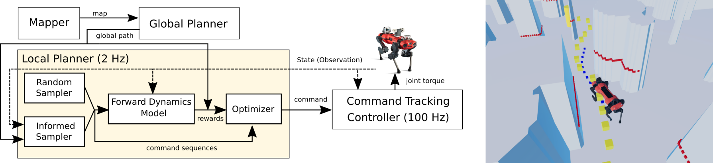

Korea Advanced Institute of Science and Technology (KAIST)

Abstract
For autonomous quadruped robot navigation in various complex environments, a typical SOTA system is composed of
four main modules -- mapper, global planner, local planner, and command-tracking controller -- in a hierarchical manner.
In this paper, we build a robust and safe local planner which is designed to generate a velocity plan to track a coarsely
planned path from the global planner. Previous works used waypoint-based methods (e.g. Proportional-Differential control
and pure pursuit) which simplify the path tracking problem to local point-goal navigation. However, they suffer from frequent
collisions in geometrically complex and narrow environments because of two reasons; the global planner uses a coarse and
inaccurate model and the local planner is unable to track the global plan sufficiently well. Currently, deep learning methods
are an appealing alternative because they can learn safety and path feasibility from experience more accurately. However,
existing deep learning methods are not capable of planning for a long horizon. In this work, we propose a learning-based
fully autonomous navigation framework composed of three innovative elements: a learned forward dynamics model (FDM), an
online sampling-based model-predictive controller, and an informed trajectory sampler (ITS). Using our framework, a quadruped
robot can autonomously navigate in various complex environments without a collision and generate a smoother command plan compared
to the baseline method. Furthermore, our method can reactively handle unexpected obstacles on the planned path and avoid them.
@INPROCEEDINGS{Kim-RSS-22,
AUTHOR = {Yunho Kim AND Chanyoung Kim AND Jemin Hwangbo},
TITLE = {Learning Forward Dynamics Model and Informed Trajectory Sampler for Safe Quadruped Navigation},
BOOKTITLE = {Proceedings of Robotics: Science and Systems},
YEAR = {2022},
ADDRESS = {New York, USA},
MONTH = {June}
}